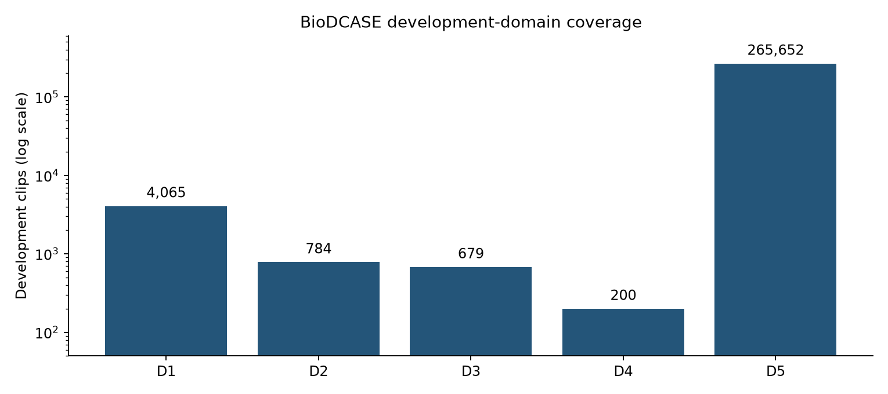

VGU · Edge AI · Weekly Progress Report
The third reporting stage examines whether BioDCASE provides a workable basis for rebuilding the mosquito-classification experiment. Week 6 established that the number of audio clips alone is an inadequate selection criterion: recording support, biological metadata, duration, and acquisition conditions also matter. BioDCASE offers explicit species and domain identifiers and a substantially larger development pool, but those advantages require an audit of what the released partitions actually contain.
This report documents the local inventory, the selection of a four-species exploratory task, the preparation of short acoustic inputs, and the design of Part B. It concerns dataset preparation and the baseline recipe. The training outcomes and the subsequent change in the albopictus validation domain are reserved for Week 8. The weekly sequence groups the work thematically; it does not assign unverified calendar periods to the saved experiments.
The local development archive corresponds to BioDCASE 2026 Zenodo v2, record 20478577. Its MD5 matches the published archive value, dbf35b9066e82cdee5461fca138f4986. The inventory contains 271,380 development WAV files and 15,573 evaluation files. The development split comprises 213,647 training, 30,516 validation, and 27,217 test IDs; the released trainval pool contains 244,163 IDs.
The development test partition and the separate evaluation archive have different roles. Development filenames encode species and domain, whereas evaluation filenames are anonymized. No evaluation labels were found locally. The project therefore uses development data to define a custom four-class experiment and preserves its own test partition for a later fixed-method evaluation. The results of this experiment cannot be presented as official challenge scores.
The release permits alternative domain-aware development partitions. That flexibility is useful, but it transfers responsibility for documenting the split and its independence assumptions to the experiment. In particular, a domain identifier is a dataset category; it is not automatically a verified recording session, individual mosquito, or microphone model.
The distribution is dominated by D5. It contributes 265,652 of the 271,380 development clips, approximately 97.9%. The remaining four domains together contribute only 5,728 clips. A random split stratified by species can consequently preserve a highly unequal mixture of acquisition conditions. A high pooled score may principally describe performance on the dominant source.
Official development partitions by acquisition domain.
| Domain | Train | Validation | Test | All |
|---|---|---|---|---|
| D1 | 634 | 96 | 3,335 | 4,065 |
| D2 | 230 | 30 | 524 | 784 |
| D3 | 364 | 53 | 262 | 679 |
| D4 | 80 | 3 | 117 | 200 |
| D5 | 212,339 | 30,334 | 22,979 | 265,652 |

The imbalance also occurs within species. In the official training pool, aegypti has 64,251 clips and albopictus 14,582, compared with 76 dirus and 395 minimus. These are release-training counts before the custom preparation policy. They must not be substituted for the retained training counts in Part B.
Candidate-label statistics in the official training pool, before custom preparation.
| Species | Training clips | Median seconds | Domains | 300 ms windows |
|---|---|---|---|---|
| Anopheles dirus | 76 | 7.32 | 1 | 4,262 |
| Anopheles minimus | 395 | 2.00 | 3 | 23,039 |
| Aedes aegypti | 64,251 | 0.62 | 3 | 208,841 |
| Aedes albopictus | 14,582 | 0.62 | 3 | 46,648 |
The majority of aegypti and albopictus training clips belong to D5, whereas dirus training data occur only in D1. Thus neither equalizing clip counts nor applying a weighted loss would by itself remove species–domain association. The selection problem is to retain a feasible set of labels while making these associations explicit.
The structural checks pass and the audio-header scan reports no errors. However, the local summed development duration is 60.283 hours, whereas the release description gives 60.66 hours. The difference is 1,370.43 seconds. The saved survey explicitly marks this discrepancy unresolved. The report therefore uses measured local durations for window calculations and preserves the discrepancy as an open reconciliation issue.
Twenty byte-duplicate groups are present, of which eighteen cross an original development split. One duplicate group has conflicting species assignments across four clips. These findings distinguish two problems: repeated signal can compromise an independence assumption, while identical signal with incompatible labels requires a label-conflict policy. An archive checksum can establish download integrity without resolving either problem.
There are 3,664 BioDCASE clips matching HumBug files both by byte identity and decoded PCM identity. These matches provide useful links to richer source metadata, but they do not make the two datasets independent corroborating collections. They also cover only part of BioDCASE. Source metadata are transferred only through an established match, not inferred for unrelated clips with similar filenames or spectra.
Gender is unavailable in the supplied BioDCASE metadata. For unmapped domains, including D5, the project does not certify a microphone-only sensor origin or verified individual/session identifiers. This limits biological and deployment claims even when species and domain labels are available. The current task is consequently an exploratory labelled-signal benchmark.
The inventory has several levels of evidence that should not be collapsed into a single pass/fail result. An ID check establishes that every listed item has a corresponding file and that the intended partitions can be reconstructed. A byte hash establishes whether two complete stored files are identical. A decoded-PCM comparison asks whether their sample content is identical despite possible container differences. A partial-waveform comparison addresses shifted or overlapping excerpts. Recording identity is a further question: two different waveforms can still originate from the same individual or session.
In this dataset, all official ID checks pass. There are no missing WAV files, repeated IDs within a listed partition, or shared IDs between the released train, validation, and test lists. The trainval IDs also equal the union of the released training and validation IDs. Nevertheless, duplicate audio is present across those partitions. This is a concrete example of why an ID-disjoint split can remain content-dependent.
The source-matching stage adds a different kind of information. A matched original HumBug name can connect excerpts that have different BioDCASE IDs. In the selected pool, the original partitions separate 79 albopictus clips associated with the same CDC source name across train, validation, and test. That source name is therefore useful for grouping, even though it does not establish how many mosquitoes were present in the original recording. Treating all 79 clips as independent observations would conflate segmentation with new recording support.
The preparation consequently preserves both the original split as a reference and the research split as an explicit design decision. This is necessary for reproducibility: a reader should be able to distinguish an exclusion caused by a label conflict from a reassignment caused by source grouping. It also prevents later results from being inadvertently described as performance on the released benchmark partition.
All development files are mono, but sample rate and encoding vary. The dominant format is 8 kHz PCM16, with 267,589 clips. Other files use 8 kHz PCM24, 44.1 kHz PCM16 or PCM24, 48 kHz PCM16, and a small number of 8 kHz DOUBLE files. These differences matter even before model training because the same nominal duration can correspond to different numbers of stored samples and different quantization properties.
Audio formats in the local development inventory.
| Sample rate Hz | Encoding | Clips | Hours |
|---|---|---|---|
| 8,000 | DOUBLE | 25 | 0.00 |
| 8,000 | PCM_16 | 267,589 | 50.11 |
| 8,000 | PCM_24 | 2,006 | 1.93 |
| 44,100 | PCM_16 | 91 | 1.37 |
| 44,100 | PCM_24 | 1,658 | 6.67 |
| 48,000 | PCM_16 | 11 | 0.21 |
Resampling to a common 8 kHz representation makes the window length and frontend frequency axis consistent. It does not make the source recordings equivalent. Differences in sensor bandwidth, acquisition gain, original filtering, and noise may remain after resampling. Likewise, converting samples to floating point gives a common numerical interface without calibrating sound pressure level.
The 4 kHz upper analysis limit follows the chosen 8 kHz input. It is an engineering scope decision for this baseline, not a biological claim that all informative mosquito sound lies below 4 kHz. Any later change in sample rate should be assessed together with input cost and acquisition conditions rather than being interpreted solely as an architectural modification.
The initial survey retains an unresolved discrepancy between the published duration and the local header-derived duration. The later preparation table provides a partial arithmetic explanation. D5 contains 265,652 clips of 0.625 s each. Multiplying the count by a rounded 0.63 s instead gives 167,360.76 s, whereas the measured D5 total is 166,032.50 s. The rounding difference accounts for 1,328.26 s of the overall 1,370.43 s discrepancy.
Partial reconciliation of published and measured development duration.
| Quantity | Seconds |
|---|---|
| Published development total | 218,388.40 |
| Local header-derived total | 217,017.97 |
| Overall difference | 1,370.43 |
| D5 rounding contribution | 1,328.26 |
| Remaining difference | 42.17 |
The remaining difference is approximately 42.17 s. This calculation explains most of the discrepancy but does not establish that every published duration difference has been reconciled. The original audit flag should therefore remain visible. The practical resolution is to calculate actual input windows from measured sample counts and to identify the population behind every reported duration.
No audio needs to be altered to make these totals agree. Rounding a reporting value and measuring a signal are different operations. The relevant question for the frontend is whether the measured number of samples supports a complete window, not whether the clip's nominal duration matches a rounded table entry.
The retained labels are Aedes aegypti, Aedes albopictus, Anopheles dirus, and Anopheles minimus. The base pool uses D1–D4, with a controlled supplement of 1,374 albopictus clips sampled from the original D5 training pool using seed 42. This avoids allowing the complete D5 majority to determine the size of the study, while retaining enough albopictus training examples for an initial experiment.
This choice is a practical scope decision rather than a claim that the four species form the cleanest possible biological cohort. The labels have different source support, duration distributions, and domain coverage. In particular, the available albopictus validation population is concentrated in a single known D1 source proxy. A large number of windows cannot compensate for that narrow source support.
The criteria are therefore joint: retain meaningful label coverage, inspect train–validation domain support, preserve detectable source relationships, and disclose unresolved provenance. A class is not considered suitable solely because it generates many windows. A four-class task is also closed-set classification of labelled recordings; it does not establish mosquito detection against arbitrary environmental sound.
Preparation separates unusable or contradictory data from uncertain but potentially informative recordings. The documented policy excludes invalid or all-zero audio and conflicting exact labels, while retaining finite low-level or sparsely clipped recordings with review flags. The saved exclusion table records nineteen duplicate-signal exclusions for albopictus and three conflicting-species exclusions across dirus and minimus. Exclusion counts refer to the selected preparation pool, not all duplicate observations in the release-wide survey.
Source grouping uses matched HumBug names and verified waveform links. Unmapped clips remain unverified groups rather than being described as independent recordings. At this stage, the checks establish separation of the groups that have been constructed. They do not certify that the search has found every relationship. This distinction becomes material in the later audit discussed in Week 8.
The A_v1 test domains are class-conditional: aegypti D3, albopictus D2, dirus D4, and minimus D2. Groups with known links inherit a common assignment. The remaining eligible groups are divided using seed 42, with a target of 20% validation groups and at least ten eligible validation clips where feasible. D5 albopictus is training-only in A_v1.
This is not a globally unseen-domain design. A domain held out for one species can appear in training for another. For albopictus specifically, A_v1 creates the D5-to-D1 train–validation contrast that later exposes a complete recall failure. That contrast should be described precisely rather than generalized to every species or to the entire benchmark.
Eligible clips and complete windows in the custom A_v1 training and validation partitions.
| Species | Partition | Eligible clips | Windows |
|---|---|---|---|
| Aedes aegypti | train | 95 | 15,592 |
| Aedes aegypti | validation | 28 | 4,681 |
| Aedes albopictus | train | 1,374 | 4,122 |
| Aedes albopictus | validation | 67 | 164 |
| Anopheles dirus | train | 63 | 3,669 |
| Anopheles dirus | validation | 24 | 1,184 |
| Anopheles minimus | train | 347 | 18,454 |
| Anopheles minimus | validation | 92 | 5,923 |
The table counts only clips eligible for a complete 300 ms window. Some retained clips are shorter and remain documented separately. Training and validation contain 1,879 and 211 eligible clips respectively, producing 41,837 and 11,952 windows. The custom test population contains 748 eligible clips and 59,688 windows and is not scored in Part B.
The full training release offers a very large aegypti population, but most of it is D5. Restricting the base experiment to D1–D4 reduces that numerical dominance and makes the retained acquisition conditions more visible. In A_v1, eligible training and validation clips occur in D1 and D4, with D3 held for the custom test. The retained training population has 95 eligible clips and 15,592 windows, while validation has 28 clips and 4,681 windows.
This design allows an initial within-domain validation comparison for this species before a later class-conditional domain holdout. It does not provide a broad independent-source validation: the counted groups are evidence-based proxies, and some retained clips still lack verified provenance. Aegypti's large release-wide count should therefore not be used as evidence that the selected research population is equally diverse.
Albopictus creates the most difficult compromise in the chosen four-class design. The base-domain pool does not offer a large, well-supported training population after the desired grouping and holdout constraints. The fixed supplement of 1,374 D5 clips supplies 4,122 complete windows. Those clips are selected from the original training pool, and the supplement outcome table confirms that all 1,374 are retained.
However, increasing the number of D5 training clips cannot create a second independent D1 validation source. The 67 eligible D1 validation clips are associated with one known source proxy. They are useful for observing a particular transfer problem, but insufficient for treating the result as a population-wide estimate of cross-domain albopictus recognition. This limitation is part of the experiment's design, before any model score is inspected.
Dirus has 63 eligible training clips and 24 validation clips in the custom preparation, producing 3,669 and 1,184 windows respectively. Both populations use D1, while D4 supplies the later test population. Validation has eight evidence groups. A high validation score would therefore first establish performance on this restricted D1 setting, not robustness across all acquisition conditions.
Dirus also has the smallest training-window contribution among the four labels. Its scarcity motivates monitoring per-class recall and avoiding a comparison based only on total accuracy. At the same time, simply weighting dirus more heavily cannot add missing sources or remove relationships between clips. Training imbalance and evaluation independence require separate responses.
Minimus has 347 eligible training clips, substantially fewer than albopictus, yet supplies 18,454 training windows. It is represented in D1, D3, and D4; the selected D4 recordings are relatively long. The split-design review records that D4 contributes approximately 79.76% of minimus training windows. Thus even a multi-domain class can have its effective training input dominated by one domain when windows are sampled naturally.
This is an important reason to report both clip counts and window counts. The training objective operates on windows, so the apparent class balance at the clip level does not describe the distribution of gradient updates. Conversely, clip-level validation gives a short clip and a long clip equal weight in the final class metrics, after aggregating their window probabilities. These choices are defensible if stated, but they are not interchangeable.
The shared frontend converts audio to mono at 8 kHz and uses 300 ms windows with a 150 ms hop. Each window contains 2,400 samples; adjacent windows overlap by 50%. Windows are generated after clip-level assignment and inherit their parent clip's split. Incomplete tails are not padded, and short clips do not contribute to the 300 ms metrics.
The duration audit supports a shorter input than the earlier one-second setting. In the official training pool, aegypti yields 208,841 complete 300 ms windows but only 4,850 one-second windows; albopictus yields 46,648 versus 893. The large difference reflects the many 0.625 s clips. These counts describe window availability, not the duration of clearly audible mosquito activity.
The log-mel representation has 40 mel bins and 27 time frames. It uses a 256-point periodic Hann analysis window, an 80-sample analysis hop, and a frequency range of 0–4 kHz. Learned input normalization is estimated from training windows alone. The waveform model receives the corresponding 2,400-sample segment. No per-clip amplitude normalization or augmentation is included in the baseline recipe.
Three units must remain distinct: a short window, a released clip, and an independent recording source. Window counts reflect computational training volume. Clip metrics summarize the released units. Neither guarantees biological independence when multiple excerpts share source content.
The release-training duration audit compares complete windows at 150, 300, 625, and 1,000 ms. For aegypti, the 300 ms setting retains over forty times as many complete windows as the one-second setting; for albopictus the ratio exceeds fifty. These ratios concern the full released training population rather than the later four-class custom subset. The result explains why insisting on complete one-second inputs would discard much of the dominant short-clip material.
The 300 ms choice also has a limit: it is still longer than some retained clips and may include substantial background around intermittent flight sound. A complete window is a geometric property of the stored recording. It does not establish that a mosquito is audible throughout the interval. Padding a shorter clip would add numerical samples but no additional observed wingbeat cycles; this baseline therefore avoids padding.
Complete-window availability at different lengths in the official training pool.
| Species | 150 ms | 300 ms | 625 ms | 1,000 ms |
|---|---|---|---|---|
| Aedes aegypti | 481,950 | 208,841 | 71,955 | 4,850 |
| Aedes albopictus | 107,916 | 46,648 | 15,960 | 893 |
| Anopheles dirus | 8,633 | 4,262 | 1,986 | 1,201 |
| Anopheles minimus | 46,484 | 23,039 | 10,766 | 6,656 |
The natural-window training population assigns approximately 37.27% of windows to aegypti, 9.85% to albopictus, 8.77% to dirus, and 44.11% to minimus. At the eligible-clip level, albopictus instead accounts for roughly 73.12% of training clips. The same dataset is therefore albopictus-dominated by clips and minimus-dominated by windows. Calling it simply balanced or imbalanced without naming the unit would conceal the mechanism relevant to training.
The different class distributions induced by clip counts and natural-window sampling.
| Species | Eligible clips | Clip share (%) | Windows | Window share (%) |
|---|---|---|---|---|
| Aedes aegypti | 95 | 5.06 | 15,592 | 37.27 |
| Aedes albopictus | 1,374 | 73.12 | 4,122 | 9.85 |
| Anopheles dirus | 63 | 3.35 | 3,669 | 8.77 |
| Anopheles minimus | 347 | 18.47 | 18,454 | 44.11 |
The common baseline retains natural sampling and unweighted cross-entropy so that this initial condition can be measured. Subsequent experiments could compare controlled sampling, weighted loss, or clip-balanced exposure. Such interventions should preserve the evaluation partition and disclose whether the number of optimizer steps changes. Otherwise, an apparent gain might arise from a different training budget rather than the intended treatment of imbalance.
Window overlap further affects the interpretation of exposure. Adjacent 300 ms windows share 150 ms of samples, so two training windows are not equivalent to two independent recording events. Overlap is useful for covering the stored signal, but an increased hop density should not be reported as an increase in biological sample size.
Part B compares eight learned baselines and a majority-class reference. The aim is to establish whether performance depends strongly on input representation or architectural family before adding corrective training methods. The implementations use a common task definition and training recipe. Adapted or style-inspired models are identified as such; their results are not reproductions of the original papers' datasets and optimization settings.
Learned baseline implementations and their comparative roles.
| Model | Input | Trainable parameters | Purpose |
|---|---|---|---|
| Spectral RF | Spectral descriptors | N/A | Non-neural spectral reference |
| Small CNN | Log-mel | 23,668 | Conventional compact CNN |
| DS-CNN | Log-mel | 6,244 | Depthwise-separable efficiency |
| TC-ResNet8 | Log-mel | 64,788 | Temporal residual modelling |
| CNN–LSTM | Log-mel | 13,428 | Convolution and recurrence |
| MosquitoSong-style 1D | Waveform | 18,292 | Learned signal representation |
| BC-ResNet1 | Log-mel | 8,968 | Efficient residual audio model |
| MicroDSC-style | Log-mel | 6,708 | Small depthwise model |
The spectral random forest provides a non-neural comparison using spectral descriptors. Small CNN establishes an accessible log-mel reference. DS-CNN and MicroDSC-style examine compact depthwise-separable alternatives. TC-ResNet8 emphasizes temporal convolution, while CNN–LSTM introduces recurrent temporal aggregation. The waveform model examines whether a learned frontend behaves differently from fixed log-mel features. BC-ResNet1 adds an efficient residual audio architecture to the comparison.
Parameter counts are measured from the local four-class implementations. They quantify one part of model size, not peak runtime RAM or feasibility on ESP32-S3. For MicroDSC-style, 6,708 trainable parameters must be distinguished from batch-normalization state and from the original reference's eleven-class total. The implementation audit records 7,028 trainable-plus-moving-statistic elements for the four-class model.
The full neural recipe uses batch size 64, learning rate 0.001, a maximum of 40 epochs, and patience 8. It uses unweighted cross-entropy, natural window sampling, and no augmentation. Seed 42 is fixed. The forest uses 100 trees and maximum depth 10. These settings intentionally provide a common initial comparison; they do not eliminate the duration imbalance induced by natural window sampling.
The primary selection measure is validation clip macro-F1. For a clip, class probabilities are averaged over its complete windows and the largest mean probability determines the label. Macro-F1 then averages equally across the four classes. Window macro-F1, balanced accuracy, per-class recall, and confusion patterns are reported alongside it. The majority reference is a sanity check on aggregate metrics under the observed class distribution.
Full runs and smoke runs serve different purposes. Smoke results establish that the code and artifact path execute, whereas the recorded full runs support baseline comparisons. Test inference is deferred. This avoids using the held-out result to choose models, epochs, normalization, or the subsequent intervention.
The forest receives 144 spectral and signal descriptors. The first 129 are log-power spectral values from 0 to 4 kHz at 31.25 Hz spacing. The remainder include centroid, spread, spectral roll-off, flatness, RMS level, periodicity estimates and confidence, harmonic fractions, and band-energy summaries. This representation provides a direct reference for whether relatively compact statistics already separate the recorded classes.
The forest is not free from source confounding. Features such as RMS and spectral shape can encode acquisition conditions as well as mosquito sound. Its role is comparative: if the forest and learned frontends show the same class-specific failure, the evidence points beyond the idiosyncrasies of one neural architecture. The feature availability indicator also matters because an absent periodicity estimate must not silently be treated as a valid zero-frequency biological observation.
Small CNN uses convolutional channels 16, 32, and 64 followed by global pooling. It provides a familiar spectrogram-learning reference with 23,668 trainable parameters. DS-CNN has 6,244 parameters and uses depthwise and pointwise operations to reduce weight cost. The comparison asks whether a compact architecture can retain useful discrimination under the same input and training conditions.
TC-ResNet8 treats the 40 mel bins as input channels and applies temporal operations over the 27 analysis frames. Its 64,788 parameters are therefore not directly comparable to a two-dimensional CNN merely by counting layers. CNN–LSTM uses convolutional reduction followed by a 32-unit recurrent stage; six time steps remain after pooling. This offers a limited temporal-aggregation comparison within the short window, rather than a long-flight sequence model.
The MosquitoSong-style network instead learns from the 2,400-sample waveform using strided one-dimensional convolutions and global pooling. It has 18,292 parameters. This is explicitly an inspired local architecture, not a reproduction of a paper's full data-processing and optimization recipe. Including it makes the input representation a visible experimental factor, but differences from log-mel models still combine frontend and architecture effects.
BC-ResNet1 uses broadcast residual operations and sub-spectral normalization in a four-class adaptation with 8,968 trainable parameters. MicroDSC-style uses channel widths 16, 32, 48, and 64, ReLU6, three pooling stages, and global average pooling, with 6,708 trainable parameters. Its normalization settings and implementation adaptations are documented in the model artifact rather than assumed identical to a reference framework.
These models are included because edge deployment requires a range of computational structures, not because fewer parameters guarantee faster execution. A depthwise operation, recurrent layer, normalization block, or residual connection can have different support and overhead on different runtimes. Part B therefore records weight size and operation estimates as descriptive properties, while reserving hardware feasibility for measurements on the intended device.
The baseline suite is deliberately broader than a competition for the highest single score. A common error across these families would be evidence that the dataset protocol deserves attention. Conversely, a difference between them would motivate a focused experiment with the same split, rather than an unrestricted search that changes the dataset and architecture together.
The preparation freeze provides manifest hashes, selected D5 IDs, source coverage, window definitions, and quality decisions. These artifacts allow the exact examples reaching Part B to be reconstructed. The bounded near-duplicate search evaluates 46,733 anchors, produces 1,763 candidate pairs, retains 229 review pairs, and accepts 23 strong links under its configured thresholds. Its own summary states that the search is not complete over all possible offsets.
The appropriate readiness claim is consequently operational: the specified pipeline can train and evaluate the frozen exploratory split. It is not a certificate that every source relationship has been resolved. Later inspection may reveal missed overlap, at which point the grouping policy and split require revision. Preserving the original freeze allows that revision to be understood rather than erasing the conditions under which the earlier results were obtained.
The most important unresolved risks are concentrated source support for albopictus validation, unknown provenance for many clips, acquisition association with species labels, and unequal window exposure. The baseline has an explicit role despite these limits: to make the failure modes observable and supply an auditable reference for the next experimental decision.
This stage produces a documented four-species exploratory dataset, explicit provenance limits, fixed short-window inputs, and a baseline suite spanning spectral, spectrogram, and waveform approaches. The preparation reduces avoidable ambiguity in the implementation while retaining the unresolved questions about source independence and acquisition conditions.
The next question is empirical: do all four classes transfer under the selected train–validation relation? Week 8 follows that question through the albopictus failure, the diagnostic evidence, and the later within-D5 comparison. The change in validation domain must be treated as a change in the evaluation question.
The companion page contains the release-domain distribution, selected-pool summaries, model definitions, and the tables used here. It is available at https://ancaranovik.github.io/Edge_AI_Mosquito/reports/week-03/biodcase-baseline/ .
Local evidence: results/A/biodcase/summary.json; target_species_training.csv; domain_by_split.csv; training_window_comparison.csv; results/A/preparation/tables/protocol_summary.csv, dataset_freeze.csv, research_split_summary.csv, and excluded_by_reason.csv. Baseline definitions and measured parameter counts are taken from the archived full run b67e5bff23cad061. These are existing artifacts; preparing this report does not rerun training.
Release reference: BioDCASE 2026, Zenodo v2, https://zenodo.org/records/20478577 . Numerical analyses use the local audit tables; release information establishes identity and context.